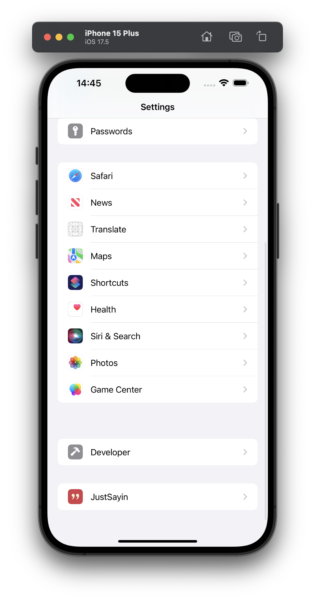
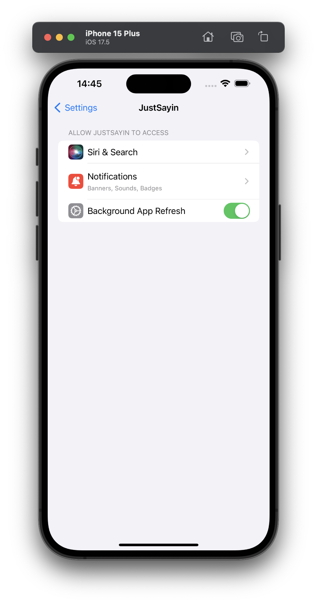
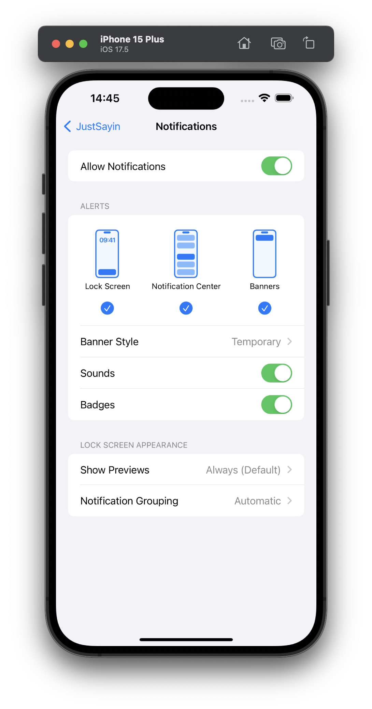

Setting up Notifications for JustSayin
To ensure you receive the daily quotes directly on your JustSayin widget, it's important to enable notifications. This guide will help you set up notifications for JustSayin if you initially chose not to allow them or wish to adjust your settings.
Enabling Notifications from iPhone Settings
If you declined notifications when first prompted by the JustSayin app, you can easily enable them from your iPhone settings. Here's how:
Open iPhone Settings:
- Locate and tap the 'Settings' app on your iPhone.
Navigate to Notifications Settings:
- Scroll down and find 'JustSayin' in the list of apps, or you can use the search bar at the top of the Settings menu to find it quickly.
- Tap on 'JustSayin' to access its specific settings.

Allow Notifications:
- In the JustSayin settings menu, tap on 'Notifications'.
- Toggle the 'Allow Notifications' switch to the ON position to enable notifications.

Customize Notification Preferences:
- Alerts: Decide where you want notifications to appear. You can enable them for the Lock Screen, Notification Center, and as Banners. Tap on these options to check them.
- Banner Style: Choose 'Temporary' or 'Persistent' to define how banners appear. Temporary banners will disappear after a short duration, while Persistent banners stay on the screen until you interact with them.
- Sounds: Toggle the 'Sounds' switch to ON if you want to receive audible alerts for notifications.
- Badges: Enable 'Badges' to see a red badge on the app icon indicating unread notifications.

Show Previews:
- Select 'Show Previews' and choose 'Always', 'When Unlocked' (default), or 'Never' to control how much of the notification content is visible from the lock screen.
Notification Grouping:
- Set 'Notification Grouping' to 'Automatic' or 'By App' to manage how notifications are grouped in your Notification Center.
Importance of Notifications for Widget Refresh
- Enabling notifications is crucial for updating the JustSayin widget with new daily quotes. Without notifications enabled, the widget may not refresh, and you might miss out on the latest quotes.
By following these steps, you ensure that your JustSayin app is fully functional, allowing you to enjoy daily inspirational quotes through notifications and keeping your widget updated.